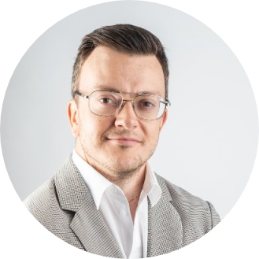

|  |
Alain WalderExecutive Director, Business Strategist and Game Theory Expert |
| 2022 - | Head of Finance/Innovation at Style Accelerator, Switzerland | |
| 2020 - 2021 | Head of Research at GTO Academy, Vienna, Austria | 2017 - 2019 | Head of Sales/Operations at Verdachi, London, UK |
| 2015 - 2016 | Business Development/Managing Partner at LeanRank, Saigon, Vietnam | |
| 2013 - 2014 | Private Equity Project Manager at Capstone Partners, Geneva, Switzerland | |
| 2012 | External Consultant at Credit Suisse, Zürich, Switzerland | |
| 2011 | Auditor Financial Services at KPMG, Zürich, Switzerland |
| 2013 | Master in Banking & Finance at University of St.Gallen | |
| 2013 | Master in International Management at CEMS | |
| 2010 | Bachelor in Business Administration at University of St.Gallen |
|
|
|
| Algorithmic trading | Developed trading bots and backtested futures strategies in Python | |
| NLH Poker | Over half million US$ career winnings with 8 live tourney wins (WPT, WSOP) | |
| Endurance Cycling | Cycled 2000kms across Thailand, rode over 60 Swiss mountain passes |
© 2023 Walder, Alain.